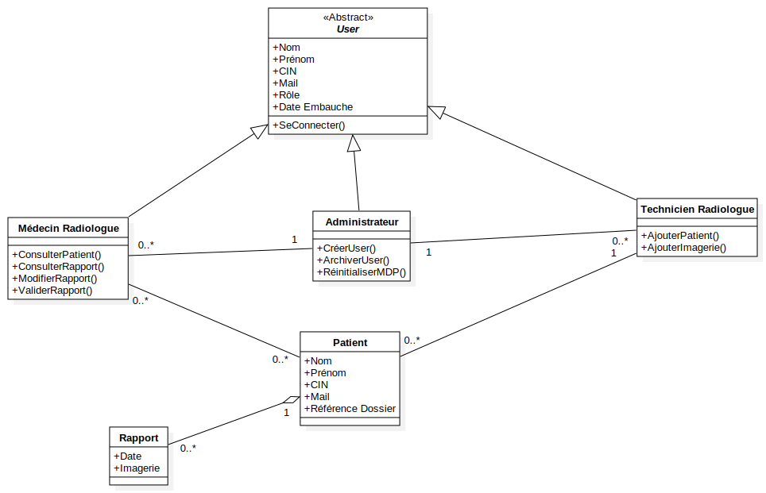
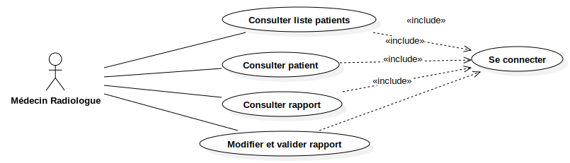
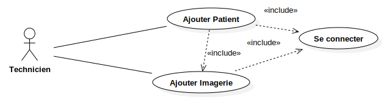
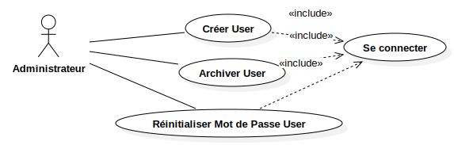

Model1
UMLModel
Untitled
::
Model1
Description
none
Diagrams

Classe

Use-Case Médecin

Use-Case Technicien

Use-Case Administrateur
Properties
Name
Value
name
Model1
stereotype
null
visibility
public
importedElements
viewpoint
Owned Elements
Classe
«Abstract»User
Médecin Radiologue
Technicien Radiologue
Administrateur
Patient
Rapport
Use-Case Médecin
Médecin Radiologue
Consulter liste patients
Consulter patient
Consulter rapport
Modifier et valider rapport
Se connecter
Use-Case Technicien
Technicien
Ajouter Patient
Ajouter Imagerie
Se connecter
Use-Case Administrateur
Administrateur
Créer User
Archiver User
Réinitialiser Mot de Passe User
Se connecter